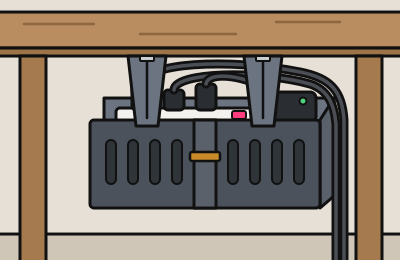
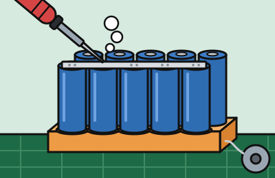
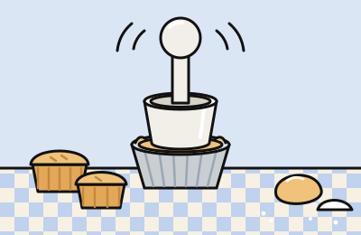

útil!

Cesto Sob a Mesa
Cesto em módulos que se encaixam, parafusado embaixo do tampo, para tirar do chão a régua de tomada e as fontes. Imprime sem suporte e vem em quantos pedaços a sua impressora pedir.
Projetos que fiz com IA, por diversão e sem compromisso. Funcionam na maior parte do tempo.
Geradores de peças para imprimir em 3D: ajuste as medidas e baixe o STL. Ver a página das utilidades →
útil!

Cesto em módulos que se encaixam, parafusado embaixo do tampo, para tirar do chão a régua de tomada e as fontes. Imprime sem suporte e vem em quantos pedaços a sua impressora pedir.
zap!

Placa com encaixes que segura as células em pé na hora de soldar o pack. Serve para 14500, 18650, 21700 e 26650, com fileiras alinhadas ou intercaladas.
nham!

Emoldurador em tronco de cone, com pino para segurar, que forra a forminha de massa num aperto só. Pode sair maciço ou oco, para gastar menos filamento.
Jogos 3D com os bichos da casa. Ver a página dos jogos →
novo!

Jogo de cafeteria 3D no estilo do Overcooked, só que sem pressa: o porquinho Pelúcio atende clientes de pelúcia e prepara espresso, pão de queijo e latte no balcão da Joli Coffee.
vrum!

Jogo de helicóptero 3D no estilo do Air Rescue do Master System: o porquinho Milton pilota o PIG-MTP, resgata porquinhos pela cidade, desvia da gangue do Lobo e termina no comando de um jato.
au!

Jogo de plataforma 3D: a chihuahua Luma espanta pombos da praça aos telhados, ganha pulo duplo, Super Bafo e enfrenta o Pombo-Rei.